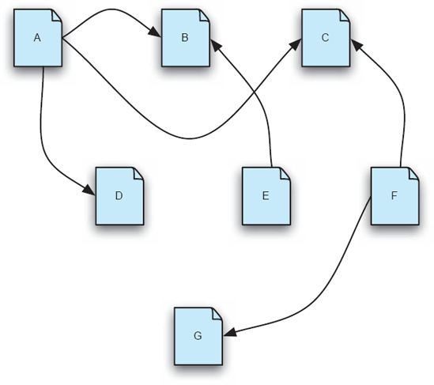
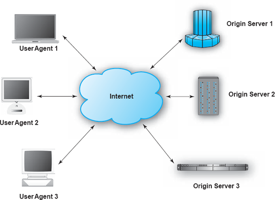
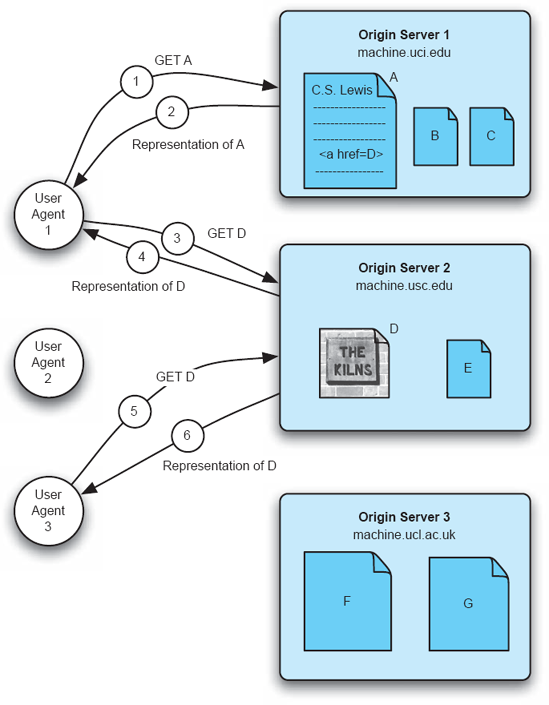
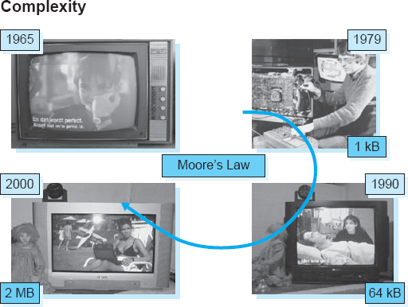
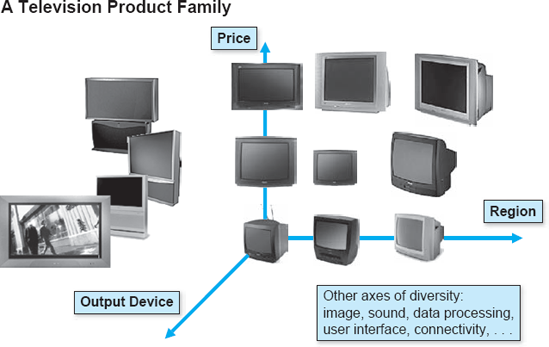
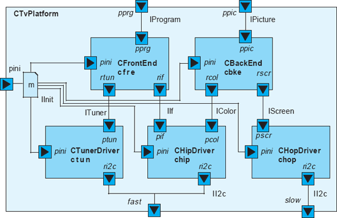
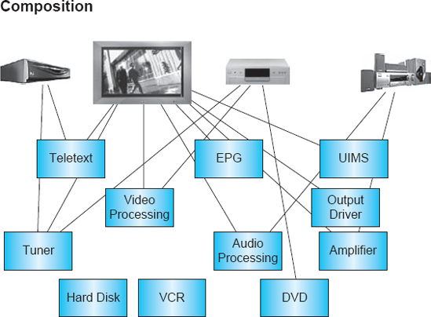

Capítulo 1. A Grande Ideia
O estudo da arquitetura de software é o estudo de como os sistemas de software são projetados e construídos. A arquitetura de um sistema é o conjunto das principais decisões de projeto tomadas durante seu desenvolvimento e qualquer evolução subsequente. Como disciplina, arquitetura é o foco principal adequado da engenharia de software, pois a produção de produtos de alta qualidade e bem-sucedidos depende dessas decisões principais.
Uma abordagem centrada na arquitetura para o desenvolvimento de software dá ênfase ao design, que permeia a atividade desde o início. A qualidade do design está bem relacionada à qualidade do software — seria extremamente incomum encontrar um sistema de software de alta qualidade com um design ruim. A prática do desenvolvimento centrado em arquitetura também pode permitir a criação de famílias de produtos de software com custos efetivos, que podem dominar um setor de aplicações por um período prolongado. Boas práticas de design podem aproveitar as lições da experiência e fornecer estratégias para atender efetivamente a uma ampla gama de necessidades.
Este capítulo apresenta as ideias centrais da arquitetura de software. Faz isso explorando primeiro a analogia entre a arquitetura dos edifícios e a arquitetura do software. A arquitetura de software, e o poder que vem de torná-la o centro do desenvolvimento de sistemas, são então ilustrados de três maneiras. Primeiro, são exploradas as ideias arquitetônicas que sustentam a World Wide Web — arquitetura de software "em grande escala". Segundo, as ideias são exploradas na área de trabalho — arquitetura de software em pequena escala. Terceiro, explora-se o papel central das arquiteturas para viabilizar famílias de produtos bem-sucedidas, utilizando eletrônicos de consumo como domínio de aplicação. Deliberadamente omitimos a maioria dos detalhes técnicos, buscando antes incutir um senso de "grande ideia".
Resumo deCapítulo 1
- 1 A Grande Ideia
- 1.1 O Poder da Analogia: A Arquitetura dos Edifícios
- 1.1.1 Limitações da Analogia
- 1.1.2 Então, qual é a grande ideia?
- 1.2 O Poder e a Necessidade das Grandes Ideias: A Arquitetura da Web
- 1.3 O Poder da Arquitetura no Pequeno: Arquitetura na Área de Trabalho
- 1.4 O Poder da Arquitetura nos Negócios: Produtividade e Linhas de Produtos
- 1.5 Assunto Final
- 1.6 Perguntas de Revisão
- 1.7 Exercícios
- 1.8 Leitura adicional
O PODER DA ANALOGIA: A ARQUITETURA DOS EDIFÍCIOS
A disciplina da arquitetura, ou seja, o design e construção de edifícios, oferece uma base rica de conceitos dos quais a arquitetura de software, e mais geralmente, a engenharia de software, se inspirou. A analogia entre o design e construção de edifícios e o design e construção de softwares é forte e facilmente compreendida, já que todos nós temos experiência substancial em viver dentro e ao redor de edifícios e em vê-los construídos.
Livros didáticos de engenharia de software normalmente usam essa analogia para motivar as fases do ciclo de vida tradicional do software. Em uma concepção altamente simplificada e idealizada de arquitetura, os requisitos para um edifício são coletados, um projeto é criado para satisfazer esses requisitos, o projeto é refinado para produzir plantas elaboradas, a construção é baseada nos projetos e a estrutura resultante é então ocupada e utilizada. Então, teoricamente, no domínio de software, os requisitos são especificados, um design de alto nível é criado, algoritmos detalhados são desenvolvidos com base nesse design, o código é escrito para implementar os algoritmos e, finalmente, o sistema é implantado e utilizado.
O resumo idealizado acima de como os edifícios se formam é quase trivial, mas oferece vários insights refletidos no domínio do software. Por exemplo, o processo arquitetônico tem como foco a satisfação das necessidades do futuro ocupante. Isso permite a especialização da mão de obra: o projetista da estrutura não precisa ser o empreiteiro que realiza a construção propriamente dita. O processo possui muitos pontos intermediários onde planos e progressos podem ser revisados. Assim, existe a visão simplista correspondente do desenvolvimento de software: a especificação dos requisitos de um sistema precede seu projeto; Esse design é criado por especialistas, não pelos usuários finais de um sistema. A programação real pode ser terceirizada, até mesmo enviada para o exterior. Protótipos e maquetes criados em vários momentos do desenvolvimento permitem que o cliente avalie periodicamente se o sistema emergente realmente atenderá às necessidades identificadas.
Uma consideração mais séria da arquitetura, no entanto, revela percepções mais profundas. Em primeiro lugar, e talvez antes de tudo, está a própria concepção de um edifício com uma arquitetura, onde essa arquitetura é um conceito separado, mas inextricavelmente ligado, à própria estrutura física. A arquitetura de um edifício, ou seja, seus principais elementos, sua composição e disposição, pode ser descrita, discutida e comparada com a de outros edifícios. A arquitetura que estava na mente do arquiteto no início do processo de desenvolvimento pode ser comparada com a arquitetura de qualquer estrutura física que tenha surgido do processo de construção. Assim também, como descreveremos em breve, as principais decisões de design que caracterizam uma aplicação de software — isto é, sua arquitetura — existem independentemente de, mas ligadas a, o código que ostensivamente implementa essa arquitetura.
Prática e Teoria
No primeiro século d.C., o autor romano Marco Vitruvio Polício, mais conhecido como Vitruvio, produziu um famoso tratado sobre arquitetura, intitulado De Architectura. Este manual contém inúmeras advertências, opiniões e observações sobre arquitetura e arquitetos que, dois mil anos depois, permanecem perspicazes e dignas de consideração. Ele inicia seu tratado em um lugar notável, considerando a prática e a teoria da arquitetura. Ambos são necessários para o profissional. Considere suas palavras:
A prática é a contemplação frequente e contínua do modo de executar qualquer trabalho, ou da mera operação das mãos, para a conversão do material da melhor e mais pronta maneira. A teoria é o resultado desse raciocínio que demonstra e explica que o material produzido foi convertido de modo a responder ao fim proposto. Vitruvio I, 1, 1
(Todas as citações de Vitruvio neste texto são de Polío)
Note que a prática não é apenas "fazer", mas envolve contemplação do que é feito.
Uma segunda percepção é que propriedades das estruturas são induzidas pelo design de suas arquiteturas. Por exemplo, um castelo medieval com muros altos e grossos e janelas estreitas ou inexistentes é projetado dessa forma para ter excelentes propriedades defensivas (desde que os atacantes estejam armados apenas com espadas e flechas). Assim também, como veremos, propriedades de aplicações de software, como resiliência diante de tipos específicos de ataques de segurança, são determinadas pelo design de suas arquiteturas.
Força, Utilidade e Beleza: As Qualidades Obtidas com a Boa Arquitetura
Tudo isso deve possuir força, utilidade e beleza. A resistência surge ao carregar as fundações até um fundo sólido e ao fazer uma escolha adequada dos materiais sem parcimônia. A utilidade surge de uma distribuição criteriosa das partes, para que seus propósitos sejam devidamente atendidos, e que cada uma tenha sua situação adequada. A beleza é produzida pela aparência agradável e bom gosto do todo, e pelas dimensões de todas as partes devidamente proporcionadas entre si. Vitruvio I, 3, 2
Um terceiro insight é o reconhecimento do papel e caráter distintos de um arquiteto, a pessoa responsável pela criação da arquitetura. A disciplina da arquitetura há muito reconhece que arquitetos exigem uma formação muito ampla. Embora competência em aspectos da engenharia seja necessária, muito mais do que isso é exigido. Um bom senso estético e uma compreensão profunda de como as pessoas trabalham, se divertem, comem e vivem são essenciais para criar edifícios que sejam apreciados, satisfazem seus ocupantes e funcionem de forma eficaz ao longo das estações e dos anos. Da mesma forma, a simples habilidade em programação não é suficiente para a criação de aplicações de software complexas que as pessoas possam empregar de forma eficaz.
Vitrúvio sobre as Qualificações de um Arquiteto
Um arquiteto deve ser engenhoso e habilidoso na aquisição de conhecimento. Deficiente em qualquer uma dessas qualidades, ele não pode ser um mestre perfeito. Ele deveria ser um bom escritor, um desenhista habilidoso, versado em geometria e óptica, especialista em figuras, familiarizado com a história, informado sobre os princípios da filosofia natural e moral, um pouco músico, não ignorante das ciências tanto do direito quanto da física, nem dos movimentos, leis e relações entre si dos corpos celestes. Vitruvio, I, 1, 3
Um quarto insight é que o processo não é tão importante quanto a arquitetura. Isso não quer dizer que esse processo seja irrelevante. Por outro lado, arquitetos e empresas de construção seguem claramente e dependem de processos padrão para orientar suas atividades diárias e garantir que todos os aspectos das atividades de design e construção sejam abordados. Mas nunca há dúvida de que o produto — a arquitetura — é o foco central. Simplesmente seguir um processo padrão não garante que um edifício bem-sucedido surja, atendendo às necessidades de seus proprietários e ocupantes. Os arquitetos e engenheiros responsáveis pela estrutura devem manter seu projeto e qualidades em destaque; O processo está presente para servir a esses fins, não para ser um fim em si mesmo.
Uma quinta percepção é que a arquitetura amadureceu ao longo dos anos e se tornou uma disciplina: existe um corpo de conhecimento sobre como criar uma ampla variedade de edifícios para atender a muitos tipos de necessidades. No entanto, não é simplesmente uma disciplina de princípios básicos e processos genéricos de desenvolvimento. Se todo edifício tivesse que ser projetado com base em princípios fundamentais e as propriedades dos materiais precisassem ser redescobertas para cada novo projeto, a maioria de nós estaria molhada e tremendo com o céu para o telhado.
A disciplina da engenharia arquitetônica capturou as experiências e lições de gerações anteriores, de modo que o processo de projetar, por exemplo, uma nova casa suburbana é muito semelhante ao de projetar milhares de outras casas. Isso não quer dizer que as casas sejam idênticas; ao contrário, dentro do conceito amplo de "casa suburbana" alguns fundamentos são estabelecidos e pontos de variação permitida são conhecidos. Quando há pontos em comum entre duas residências, grandes eficiências podem ser alcançadas por meio da reutilização do conhecimento, reutilização do design de subsistemas, reutilização de ferramentas e dos benefícios que vêm de materiais, peças e tamanhos padronizados. Embora qualquer pessoa que já tenha tentado construir uma casa sob medida certamente discorde que o processo é eficiente comparado à tarefa de projetar de uma folha realmente limpa, o ofício funciona muito bem. Assim também, como os capítulos seguintes deste livro demonstrarão, a arquitetura de software está amadurecendo rapidamente em uma disciplina robusta, aproveitando o conhecimento adquirido por meio de uma infinidade de experiências de desenvolvimento de sistemas.
Uma forma fundamental pela qual as experiências e lições de gerações anteriores de arquitetos e moradores de edifícios foram capturadas é resumida na noção de estilos arquitetônicos — uma percepção que tem aplicação poderosa no domínio do software. As expressões "villa romana", "catedral gótica", "casa em estilo rancho", "chalé suíço" e "arranha-céu de Nova York" caracterizam tipos de edifícios que têm várias características em comum. Casas de lote estilo ranch, por exemplo, são residências térreas com telhados baixos; Chalés suíços geralmente são de dois a quatro andares, tradicionalmente feitos de madeira, têm telhados íngremes e grandes varandas protegidas. Arranha-céus de Nova York têm dezenas de andares, estruturas de aço, fazem excelente uso de áreas de construção com pequena área e oferecem centenas de milhares de metros quadrados de área de piso. Vilas romanas se adaptam ao clima mediterrâneo, e assim por diante.
O desenvolvimento de um estilo arquitetônico ao longo do tempo reflete o conhecimento e a experiência adquiridos pelos construtores e ocupantes ao tentarem atender a um conjunto comum de requisitos e acomodar as limitações da topografia local, clima, materiais de construção disponíveis, ferramentas e mão de obra. Casas no estilo rancho, como as comuns no sul da Califórnia, podem ser construídas de forma econômica se houver madeira para estrutura, funcionarem muito bem em áreas propensas a terremotos e são excelentes para quem não pode subir escadas. Chalés suíços funcionam bem em áreas com forte nevasca, com os telhados íngremes ajudando a minimizar a carga estrutural causada pela neve. Portanto, uma abordagem que funcione bem para fornecer casas no sul da Califórnia não será necessariamente adequada para fornecer casas na Suíça, ou vice-versa. Mas no sul da Califórnia, uma grande variedade de casas adequadas para o local pode ser construída com sucesso de forma econômica por arquitetos habilidosos nos idiomas e materiais locais.
Vitruvio sobre Estilos
[Edifícios particulares] são devidamente projetados, quando se tem em conta o país e o clima em que são erguidos. Pois o método de construção adequado ao Egito seria muito impróprio na Espanha, e o usado no Ponto seria absurdo em Roma: assim, em outras partes do mundo, um estilo adequado a um clima seria muito inadequado para outro: pois uma parte do mundo está sob o curso do sol, outro está distante dela, e outro, entre os dois, é temperado. Vitruvio, VI, 1, 1
Uma forma de resumir estilos arquitetônicos é como um conjunto de restrições — restrições impostas ao desenvolvimento para provocar qualidades desejáveis específicas. Por exemplo, o estilo chalé suíço tem uma restrição de que os telhados têm inclinações íngremes; A qualidade evocada é que chalés tendem a se dar bem em áreas de neve intensa. O estilo de fazenda suburbana tem uma restrição de que componentes de mercadoria sejam utilizados; A qualidade é que as casas são mais baratas de construir e mais fáceis de consertar do que casas personalizadas. O estilo gótico limita a construir com pedra, vitrais e abóbadas altas caneladas; As qualidades evocadas são que os edifícios são duradouros, instrutivos e inspiradores.
Caracterizados de forma mais construtiva, os estilos oferecem ao arquiteto uma ampla gama de soluções, técnicas e paletas de materiais, cores e tamanhos compatíveis. Em vez de gastar muito tempo buscando um espaço ilimitado de alternativas, ao trabalhar dentro de um estilo, um arquiteto pode dedicar esse mesmo tempo refinando, personalizando e aperfeiçoando um design específico.
O conceito de estilos arquitetônicos se estende de forma muito poderosa ao domínio do software. Como ilustraremos no restante deste capítulo e depois ao longo do livro, estilos são ferramentas essenciais para arquitetos dominarem, pois são um ponto importante de alavanca intelectual na tarefa de criar sistemas de software complexos.
Limitações da Analogia
Antes de avançar para a consideração detalhada de arquiteturas, estilos e seu uso no desenvolvimento de sistemas de software, algumas palavras de advertência são necessárias em relação ao uso da analogia com arquiteturas de edifícios. Como em qualquer analogia, tem limitações.
Primeiro, sabemos muito sobre edifícios. Ou seja, desde o nascimento, todos nós experimentamos e aprendemos sobre edifícios. Como resultado, temos uma intuição bem desenvolvida sobre quais tipos de edifícios podem ou não ser construídos, e o que é apropriado para uma determinada necessidade e situação. Nossas intuições para software não são tão desenvolvidas e, portanto, precisamos ser mais metódicos e analíticos em nossa abordagem.
Segundo, a natureza essencial do meio de software é fundamentalmente diferente dos materiais e meios da arquitetura de edifícios. Você consegue distinguir grande parte da arquitetura de um edifício apenas olhando. Com software, o problema é muito mais difícil. O software é intrinsecamente intangível; No fundo, é uma entidade abstrata e só trabalhamos com várias representações dela. Isso implica que o software é mais difícil de medir e analisar, tornando mais difícil avaliar as diversas qualidades dos projetos e medir o progresso rumo à conclusão.
Terceiro, o software é mais maleável do que os materiais físicos de construção, oferecendo a possibilidade de tipos de mudanças impensáveis em um domínio físico. A analogia da construção é, portanto, uma fonte pobre de ideias para lidar com mudanças, já que os edifícios acomodam a mudança com dificuldade[1]
Existem problemas adicionais com a analogia:
- Não existe uma indústria de construção por software no mesmo grau que existe para edifícios. A indústria da construção possui uma estrutura substancial, refletindo diversas especializações, conjuntos de habilidades, caminhos de treinamento, organizações corporativas, órgãos de normalização e regulamentos. Embora a indústria de software tenha alguma estrutura, inclusive a vista nas práticas de desenvolvimento offshore, ela é muito menos diferenciada do setor da construção.
- A disciplina da arquitetura não tem nada parecido com a questão da implantação encontrada em software: o software é construído em um único lugar, mas implantado para uso em muitos lugares, frequentemente com especialização e localização. Edifícios fabricados, também conhecidos como trailers, são um pouco semelhantes, mas ainda assim não há uma noção correspondente às arquiteturas móveis distribuídas dinâmicas, como ocorre com o software.
- Software é uma máquina; edifícios não são (apesar da declaração de Le Corbusier de que, "Uma casa é uma máquina para se viver nela"). O caráter dinâmico do software — a observação que levou ao famoso artigo de Edsger Dijkstra sobre a "declaração de goto considerada prejudicial" (Dijkstra 1968) — representa um desafio profundamente difícil para os projetistas, para o qual não há contraponto no design de edifícios.
Apesar dessas limitações — e de outras — a analogia entre a arquitetura dos edifícios e o software é forte e instrutiva. O foco na arquitetura é fundamental no projeto de edifícios; Esse foco é igualmente poderoso para software. Seções subsequentes deste capítulo demonstrarão isso no grande lugar, no pequeno e no cadinho da indústria. Antes de considerar esses exemplos, entretanto, resumimos nossos principais temas na próxima seção.
Então, qual é a ideia?
A grande ideia é que a arquitetura de software deve estar no cerne do design e desenvolvimento de sistemas de software. Deve estar em primeiro plano, mais do que processo, mais do que análise e certamente mais do que programação. Somente dando atenção e destaque adequados à arquitetura de um sistema de software, ao longo de toda a sua vida útil, o desenvolvimento e a evolução de longo prazo desse sistema podem ser eficazes ou eficientes em qualquer sentido significativo. De fato, veremos que, para qualquer aplicação de tamanho ou complexidade significativa, sua arquitetura deve ser considerada antecipadamente, assim como a criação bem-sucedida de um edifício grande exige consideração de sua arquitetura antes da construção.
Além disso, os insights apresentados acima sobre arquitetura, arquitetos e, especialmente, estilos arquitetônicos oferecem uma alavanca intelectual substancial na criação de sistemas de software, mas exigem estudo cuidadoso, boas ferramentas e uso disciplinado para obter seus potenciais benefícios substanciais.
Dar preeminência à arquitetura oferece o potencial para realizar:
- Controle intelectual
- Integridade conceitual
- Uma base adequada e eficaz para a reutilização — de conhecimento, experiência, projetos e código
- Comunicação eficaz do projeto
- Gerenciamento de um conjunto de sistemas variantes relacionados
Note a frase acima sobre direcionar "atenção e proeminência para a arquitetura de um sistema de software, ao longo de toda a sua vida útil." Um foco de curto prazo na arquitetura de software não trará benefícios significativos. Assim como o conceito de arquitetura, ou o envolvimento de um arquiteto, em um projeto de construção não garante que um edifício será bem-sucedido, o mesmo vale para software. Deficiências no processo de construção — seja de edifícios ou de software — podem fazer com que o sistema construído se desvie de sua arquitetura pretendida, possivelmente com consequências desastrosas. No entanto, tais deficiências podem ser evitadas, e discutiremos técnicas especificamente destinadas a garantir que o sistema implementado seja, e permaneça, fiel à arquitetura pretendida.
Por fim, note que ao dizer que deve ser dada atenção adequada à arquitetura de um sistema de software, não estamos defendendo a criação de algo totalmente novo: todos os sistemas de software têm uma arquitetura. Assim como todo edifício tem uma arquitetura e pelo menos um arquiteto, o software também tem. Simplesmente afirmar que um prédio ou programa tem uma arquitetura ou um arquiteto não implica muito. Existem arquiteturas boas, ruins, elegantes e curiosas. Assim é com software. A estrutura de uma aplicação pode ser elegante e eficaz ou desajeitada e disfuncional. Nosso objetivo nas próximas páginas é fornecer ao leitor as habilidades necessárias para garantir que as aplicações tenham arquiteturas boas, elegantes e eficazes. As seções seguintes prosseguem considerando alguns exemplos excepcionais da disciplina da arquitetura de software, bem aplicados.
O PODER E A NECESSIDADE DAS GRANDES IDEIAS: A ARQUITETURA DA WEB
Um exemplo primário do poder da arquitetura pode ser visto em uma aplicação que todos os leitores deste livro conhecem: a World Wide Web. Pense por um momento: O que é a Web? Como ele é construído? Como explicar a Web para uma criança? Se você tem um negócio e quer ter uma presença de comércio eletrônico baseada na Web, como projetar o software para seu site, incluindo determinar como ele irá interagir com as máquinas dos seus clientes? É a arquitetura que oferece o vocabulário e os meios para responder a essas perguntas. É o estilo arquitetônico específico da Web que limita (e, assim, ajuda) a produzir um sistema de e-commerce que "funciona bem" com os outros.
Vamos responder algumas das perguntas acima. O que é a Web? Em uma visão, focando na percepção do usuário, a Web é um conjunto dinâmico de relacionamentos entre coleções de informações. Em outra visão, focando em aspectos grosseiros da estrutura da Web, a Web é uma coleção dinâmica de máquinas de propriedade e operação independente, localizadas ao redor do mundo, que interagem através de redes de computadores. Em outra visão, sob a perspectiva de um desenvolvedor de aplicação, trata-se de uma coleção de programas escritos de forma independente que interagem entre si de acordo com regras especificadas nos padrões HTTP, URI, MIME e HTML.

Figura 1-1. Um documento hipertexto.
Considerando essas perspectivas por sua vez, a visão da Web como um conjunto de informações inter-relacionadas é ilustrada na Figura 1-1.
Na figura, documentos rotulados de A a G são mostrados como entidades independentes, mas com relações explícitas entre elas. Por exemplo, se o documento A for uma biografia do autor C. S. Lewis, então a seta para o documento D pode representar uma visão de The Kilns, a casa em Oxford onde Lewis morou por muitos anos, conforme mostrada por uma webcam. A seta para o documento C do documento A pode representar uma referência a uma descrição de Oxfordshire, o condado onde The Kilns é encontrado. Os outros documentos mostrados podem representar o texto de alguns dos muitos livros que Lewis escreveu, como O Leão, a Bruxa e o Guarda-Roupa. Nós, como usuários da Web, podemos entender a mini-Web da Figura 1-1 como um conjunto de documentos inter-relacionados e um navegador web, como Safari ou Internet Explorer, como um veículo para visualizar os documentos e navegar entre eles. Em resumo, essa mini-Web é conhecida como hipertexto e a visualização e mudança de foco de um documento para outro como navegar, ou navegar, por esse hipertexto.

Figura 1-2. Uma visão de máquina de uma pequena parte da World Wide Web.
A visão ilustrada na Figura 1-1 é aquela em que os dados da Web e as relações entre eles são mostrados. Em contraste, a Figura 1-2 mostra a Web como um conjunto de computadores interconectados pela Internet. As máquinas são mostradas aqui como sendo de dois tipos: agentes de usuário e servidores de origem. Agentes de usuário são, por exemplo, computadores desktop e laptops nos quais um navegador web está rodando. Servidores Origin são máquinas que servem como repositórios permanentes de informações, como os documentos mencionados anteriormente referentes a C. S. Lewis. Nessa visão, a Web é entendida como um conjunto físico de máquinas pelo qual um usuário em um computador agente de usuário pode acessar informações dos servidores de origem. A visão é bastante vaga, no entanto, e não apresenta nenhum insight real sobre como a informação é obtida pelos agentes de usuário ou como a informação em um documento está relacionada à informação de outro. No entanto, a abstração que apresenta é precisa na medida em que se aplica, e pode ser útil para explicar alguns conceitos da Web.
Uma terceira visão da Web é mostrada nas Figuras 1-3. Nessa visão, os agentes de usuário e os servidores de origem das Figuras 1-2 são novamente mostrados, mas agora a localização dos documentos A a G é mostrada. A figura também mostra um conjunto de interações específicas entre dois dos agentes de usuário e dois dos servidores de origem, correspondendo a um padrão particular de acesso ao hipertexto de C. S. Lewis. Neste exemplo, o Agente de Usuário 1 solicita, por meio do método HTTP GET, uma cópia do documento A, uma biografia de Lewis. Essa interação é mostrada no diagrama pela seta marcada como 1. Uma representação, ou "cópia", da biografia é retornada, mostrada como a seta marcada como 2. Como a biografia contém uma referência de hipertexto (href) para documentar D, um JPEG dos Fornos, o Agente de Usuário 1 emite outro GET, desta vez para machine.usc.edu, para obter a imagem. Esse pedido está marcado como 3 no diagrama. Uma cópia da imagem é retornada, como mostrado pela seta marcada como 4. Interações adicionais entre agentes de usuário e servidores são mostradas no diagrama como interações 5 e 6.

Figuras 1-3. Agentes e servidores de origem interagindo de acordo com o protocolo HTTP, enquanto os usuários exploram a Web.
Esses três diagramas ilustram a Web e fornecem uma indicação de como ela funciona, mas claramente há muito, muito mais por trás disso. Esses diagramas usam um conjunto muito simples e limitado de informações para representar os bilhões de páginas de informações disponíveis na Web, e um conjunto de menos de uma dúzia de máquinas para representar os milhões de máquinas interagindo em qualquer instante pela Internet. Então, podemos realmente dizer que esses diagramas explicam como a Web funciona? Claramente não. Uma compreensão muito mais geral da Web pode ser apresentada como um conjunto de definições e restrições sobre como esses bilhões de documentos se interrelacionam e como milhões de máquinas interagem,[2] da seguinte forma:
- A Web é um conjunto de recursos, cada um dos quais pode ser identificado por um localizador uniforme de recursos, ou URL. Um padrão especifica a sintaxe legal de uma URL.
- Cada recurso denota, informalmente, alguma informação. A informação pode ser, por exemplo, um documento, uma imagem, um serviço que varia no tempo (por exemplo, "o clima de hoje em Los Angeles"), uma coleção de outros recursos, e assim por diante.
- URLs podem ser usadas para determinar a identidade de uma máquina na Internet, conhecida como servidor de origem, onde o valor do recurso pode ser determinado.
- A comunicação é iniciada por clientes, conhecidos como agentes usuários, que fazem requisições aos servidores. Navegadores web são instâncias comuns de agentes de usuário.
- Os recursos podem ser manipulados por meio de suas representações. Por exemplo, um recurso pode ser atualizado por um agente de usuário enviando uma nova representação desse recurso para o servidor de origem que contém essa informação. Da mesma forma, um recurso pode ser visualizado por um agente de usuário que obtém uma representação desse recurso de um servidor de origem e exibe essa representação em um monitor. HTML é uma linguagem de representação muito comum usada na Web.
- Toda comunicação entre agentes de usuário e servidores de origem deve ser realizada de acordo com um protocolo simples e comum (HTTP). Comunicar-se de acordo com HTTP exige que as partes implementem algumas operações primitivas, como GET e POST.
- Toda comunicação entre agentes de usuário e servidores de origem deve ser livre de contexto. Ou seja, um servidor de origem deve ser capaz de responder corretamente à solicitação de um agente usuário com base apenas nas informações contidas na solicitação, e não exigir a manutenção de um histórico de interações entre esse agente de usuário e o servidor de origem. (Isso às vezes é conhecido como "interações sem estado.")
Para ilustrar, no exemplo acima, os documentos de A a G são recursos; máquinas machine.uci.edu e machine.usc.edu rodando o servidor Web Apache são exemplos de servidores de origem. Agentes de usuário podem ser laptops pessoais rodando um navegador web como o Internet Explorer. As representações incluem uma cópia do HTML da biografia de Lewis e um JPEG da visão atual dos The Kilns capturada por uma webcam.
Descrevendo as regras pelas quais as várias partes da Web funcionam e interagem — sua arquiteturaestilo— fornece a base para entender a Web independentemente de sua configuração ou ações em qualquer instante específico. Essa descrição nos permite raciocinar efetivamente sobre como a Web funciona e orienta a determinação do que deve ser feito para incorporar novas informações ou novas máquinas na Web. Embora a lista acima não esteja completa (mais detalhes serão fornecidos mais adiante emCapítulo 11e em várias referências) é, ainda assim, representativa e substancial. Essa abordagem para entender a Web é claramente superior à baseada no código — tentando declarar cada detalhe de cada máquina e cada software envolvido na Web em um dado momento.
Uma série de observações críticas são evidentes:
- A arquitetura da Web é totalmente separada do código que implementa seus diversos elementos. De fato, para entender a Web, a arquitetura é o único ponto de referência eficaz. A arquitetura é o conjunto de decisões principais de design que determinam os elementos-chave da Web e suas inter-relações. Essas decisões estão em um nível de abstração acima do código-fonte e, portanto, são favoráveis à compreensão de todo o sistema no nível da aplicação.
- Não existe um único pedaço de código que "implemente a arquitetura". A Web é "implementada" por servidores Web de diversos designs, navegadores de diferentes designs, proxies, roteadores e infraestrutura de rede. Apenas olhar para qualquer pedaço de código, ou mesmo todo o código em qualquer máquina, não explica a estrutura da Web; na verdade, a arquitetura é o único guia adequado para entender o todo.
- Existem múltiplos pedaços equivalentes (em relação à arquitetura) de código que existem e implementam os vários componentes da arquitetura. O estilo arquitetônico da Web restringe o código em alguns aspectos, dizendo como uma determinada peça deve funcionar em relação aos outros elementos da arquitetura, mas há uma liberdade substancial para codificar os internos de um elemento. Assim, vemos muitos navegadores diferentes de diferentes fornecedores, oferecendo uma variedade de vantagens individuais, mas, na medida em que os navegadores se relacionam ao restante da Web, eles são equivalentes.
- As restrições estilísticas que constituem a definição do estilo da Web não são necessariamente aparentes no código, mas os efeitos das restrições implementadas em todos os componentes são evidentes na Web.
Essas observações são profundas e começam a indicar o papel da arquitetura na Web. Mas as questões mais importantes de todas permanecem:
- Por que essas decisões específicas foram tomadas?
- Por que essas decisões foram importantes e não outras?
- Por que sistemas semelhantes que tomavam decisões ligeiramente diferentes falharam, quando a Web é um sucesso tão estrondoso?
Essas perguntas só podem ser respondidas ao olhar para a Web sob uma perspectiva arquitetônica, e de fato vão direto ao cerne da arquitetura.Capítulo 11discute como os designers da Web miraram em um conjunto específico de qualidades — aquelas que tornam a Web tão bem-sucedida — e depois tomaram decisões específicas para imbuir a Web com essas qualidades. Esse capítulo discutirá a Web e seu estilo subjacente, REST (REpresentational State Transfer), com mais detalhes, e mostrará como o estilo é baseado e derivado de um grande conjunto de estilos mais simples.
A mensagem principal aqui é que um dos sistemas de software mais bem-sucedidos do mundo só é compreendido adequadamente do ponto de vista arquitetônico. O desenvolvimento da Web, a maturação do protocolo HTTP/1.1 e a implementação de seus elementos centrais foram todos impulsionados por entendimentos e princípios arquitetônicos. Sem a rocha dessa abstração, é improvável que a Web tivesse sobrevivido além dos seus primeiros dois ou três anos de existência.
O PODER DA ARQUITETURA NO PEQUENO: ARQUITETURA NA ÁREA DE TRABALHO
Não é necessário olhar para aplicações grandes e complexas, como a Web, para encontrar arquiteturas interessantes ou aplicações onde o foco em arquiteturas tenha grande retorno.
Arquiteturas estão na base das aplicações mais simples, e conceitos arquitetônicos fornecem o poder conceitual por trás, por exemplo, dos quase onipresentes programas shell de linha de comando. Encontrados em praticamente todas as plataformas, incluindo Mac OS X, Linux, Windows e as plataformas Unix onde os conceitos se originaram, tais scripts permitem ao usuário compor rapidamente e facilmente novas aplicações a partir de componentes pré-existentes chamados filtros (que, por acaso, são programas executáveis completos por si só), apenas seguindo algumas regras simples. Por exemplo, o seguinte aplicativo cria uma lista ordenada de todos os arquivos no diretório nomeados faturas cujos nomes incluem a string de caracteres "August":
Faturas LS | grep -e August | ordenar
À primeira vista, isso pode não parecer uma aplicação, já que podemos discernir visualmente como a funcionalidade é fornecida a partir de peças, mas é exatamente isso que é. Para entender como essa aplicação funciona e como ela é construída, é preciso entender em geral o que são filtros e pipes, entender o que os filtros específicos usados na construção dessa aplicação fazem e, finalmente, raciocinar sobre como esses filtros específicos são configurados, usando os pipes, para formar essa aplicação.
Primeiro, um filtro é um programa que recebe um fluxo de caracteres de texto como entrada e produz um fluxo de caracteres como saída. O processamento de um filtro pode ser controlado por um conjunto de parâmetros. Um pipe é uma forma de conectar dois filtros, na qual o fluxo de caracteres produzido pelo primeiro filtro é direcionado para a entrada do fluxo de caracteres do segundo filtro.
Na aplicação acima, três programas de filtro são usados: ls, grep e sort. O filtro de ordenação examina seu fluxo de entrada, observando como o fluxo é dividido em linhas de texto por um caractere de fim de linha, e produz em seu fluxo de saída essas mesmas linhas de texto, porém em ordem ordenada. Embora a ordenação possa receber parâmetros opcionais para controlar, por exemplo, se as linhas estão ordenadas em ordem crescente ou descendente, na aplicação acima não são fornecidos parâmetros, então o comportamento padrão é ordenar em ordem crescente.
O filtro grep examina seu fluxo de caracteres de entrada para linhas (ou seja, partes do fluxo de caracteres de entrada demarcadas por caracteres de fim de linha) que contenham uma substring correspondente a um valor de string fornecido como parâmetro. Na aplicação acima, o parâmetro -e é usado para fornecer o valor da string ("August") para o qual grep deve ser pesquisado. O GREP produz como fluxo de saída apenas aquelas linhas que contêm a string de busca designada.
O filtro ls não processa um fluxo de caracteres recebido; em vez disso, comunica-se com o sistema operacional para obter os nomes dos arquivos em um diretório nomeado (ou "pasta"). O LS então produz, como seu fluxo de saída, uma sequência de caracteres que são os nomes textuais dos arquivos no diretório designados pelos parâmetros da linha de comando para o LS, com cada nome de arquivo seguido por um caractere no final da linha.
Com essa compreensão dos filtros como programas que leem e produzem fluxos de caracteres, pipes como formas de conectar filtros ao rotear os fluxos de caracteres, e o funcionamento de cada um dos três filtros usados (listar nomes de arquivos, procurar a presença de uma substring específica e ordenar), é fácil entender como funciona a aplicação acima. O LS produz uma lista textual dos arquivos encontrados no diretório de faturas. Um pipe (mostrado na linha de comando como uma barra vertical) direciona essa saída para a entrada do grep. O grep então examina esses nomes para identificar qualquer um contendo a substring "August" e produz apenas esses nomes como seu fluxo de saída. Um segundo pipe direciona esse fluxo de saída para ordenar, que então ordena os nomes dos arquivos em ordem crescente, produzindo essa listagem ordenada como sua saída (e da aplicação).
A observação crítica aqui é que a estrutura dessa aplicação pode ser compreendida com base em pouquíssimas regras. Dado o entendimento dessa estrutura e o conhecimento do funcionamento dos filtros individuais, a função da aplicação completa pode ser compreendida. O conhecimento dessas mesmas regras e do funcionamento de algumas dezenas de programas básicos de filtros pré-existentes permite entender centenas de outras aplicações úteis. Da mesma forma, um desenvolvedor pode criar novas aplicações com base nessas mesmas regras e conhecimento dos filtros.
Programas Comuns de Filtro Unix
Esses programas de filtro Unix comumente usados podem ser usados individualmente ou combinados em arquiteturas pipe-and-filter para criar muitas aplicações úteis. Consulte as páginas do manual do seu sistema para instruções detalhadas sobre como usá-los (tente "homem homem" na janela do terminal).
ls: Liste os nomes dos arquivos dentro de um diretório.
grep: Produzir linhas na saída que correspondam a um padrão especificado, onde esse padrão é descrito como uma expressão regular.
ordenar: Ordenar todas as linhas de entrada de acordo com um conjunto de parâmetros (por exemplo, para ordem ascendente ou descendente).
cat: Concatenar arquivos especificados por parâmetros para o fluxo de saída.
sed: Leia o fluxo de entrada, modifique (edite) de acordo com os parâmetros especificados e escreva o resultado na saída.
awk: Combinar padrões no fluxo de entrada e realizar operações especificadas sobre uma correspondência.
cabeça: Liste as primeiras n linhas da entrada na saída.
cauda: Liste as últimas n linhas da entrada.
uniq: Copie linhas de entrada únicas para a saída.
menos: Listar incrementalmente a entrada na saída, com controles determinando quanta informação listar em um dado momento.
LPR: Envie a entrada para a impressora.
cortar: Selecione partes de cada linha de entrada e escreva-as na saída.
homem: Formate e exiba as páginas do manual online para um comando específico na saída.
Tee: Copie a entrada para a saída, além de fazer uma cópia em zero ou mais arquivos especificados.
Um exemplo complexo:
grep HTTP_USER_AGENT httpd_state_log | corte -f 2- |
grep -v 'via Gateway' | grep -v 'via proxy gateway'
| preto | uniq -c | preto -nr | cabeça −5
Isso produz os cinco principais navegadores (agentes de usuário) a partir de um log de estado WWW chamado "httpd_state_log", eliminando todas as strings de agentes de usuário proxy.
O conjunto particular de regras em ação aqui define um estilo arquitetônico conhecido, não surpreendentemente, como tubo e filtro. Parte da beleza do pipe-and-filter é que, devido à sua simplicidade, os usuários finais podem desenvolver aplicações sem nunca terem sido treinados como programadores. É como trabalhar com blocos de Lego ou Brinquedos Tinker: uma vez que você entende como encaixar as peças e os diferentes tipos de funções que as várias peças podem desempenhar, a tarefa criativa de montar as peças em um novo design pode avançar rápida e eficazmente. Não é necessário treinamento nos detalhes da programação; O poder de um conceito arquitetônico simples pode ser compreendido e aplicado por um público amplo.
Embora o estilo seja muito simples, note que o uso dele não se limita ao uso dos programas de filtro padrão encontrados em Unix, Linux e outros sistemas operacionais que suportam pipe-and-filter; Um desenvolvedor pode criar um programa que opera lendo e escrevendo um fluxo de caracteres e então usar esse filtro/programa em conjunto com outros em uma aplicação baseada em pipe-and-filter. Da mesma forma, o estilo não se limita a aplicações escritas na notação de linha de comando, embora essa notação seja certamente comum.
Além do tubo e filtro, existe uma grande variedade de outros estilos arquitetônicos simples. A maioria deles será familiar para desenvolvedores experientes: sistema em camadas, programa principal e sub-rotinas, orientado a objetos, invocação implícita e blackboard. Uma discussão detalhada aparece emCapítulo 4. Os desenvolvedores podem escolher entre esses estilos, e uma grande variedade de outros, dependendo da natureza do problema a ser resolvido e das qualidades desejadas na solução. Por exemplo, aplicações pipe-and-filter são facilmente compreensíveis, rodam em quase qualquer sistema operacional e funcionam de forma eficiente quando o problema (e sua estruturação em pipe-and-filter) admite concorrência. Por outro lado, pipe-and-filter exige que toda a comunicação entre filtros seja serializada em fluxos de caracteres; Assim, se uma estrutura de dados de grafo precisa ser passada de um filtro para outro, ela deve primeiro ser serializada em um fluxo textual, transferida pelo pipeline e, em seguida, reconstruída na estrutura de dados do grafo pelo próximo filtro. Os pipes garantem compatibilidade sintática entre os filtros, mas não fazem nada para garantir a compatibilidade semântica.
O PODER DA ARQUITETURA NOS NEGÓCIOS: PRODUTIVIDADE E LINHAS DE PRODUTOS
A discussão sobre a World Wide Web emSeção 1.2ilustrou como a arquitetura é um facilitador fundamental para o desenvolvimento de sistemas complexos e em grande escala. A discussão sobre o estilo de tubo e filtro emSeção 1.3mostrou como conceitos arquitetônicos podem tornar eficaz o desenvolvimento até mesmo de aplicações online, fornecendo a alavanca necessária para explorar o poder de uma biblioteca de componentes reutilizáveis (em particular, filtros Unix). Arquiteturas também são facilitadores críticos para o desenvolvimentoFamílias de produtos, um elemento-chave de muitas estratégias de negócios.
Famílias de produtos são conjuntos de programas independentes que possuem uma medida significativa de comumidade em seus componentes constituintes e estrutura. Os conceitos-chave são mostrados no exemplo a seguir. Qualquer comprador de eletrônicos de consumo, como televisores, sabe que há inúmeras opções disponíveis. Mesmo de um único fabricante, o consumidor enfrenta uma variedade de tamanhos e recursos que permite comprar um dispositivo que atenda a um conjunto muito específico de requisitos. Talvez um comprador queira uma HDTV de 35 polegadas com DVD player embutido para o mercado norte-americano. Um dispositivo assim pode conter mais de um milhão de linhas de software embarcado. Essa televisão/DVD player em particular será muito semelhante a uma HDTV de 35 polegadas sem o DVD player, e também a uma HDTV de 35 polegadas com DVD player embutido para o mercado europeu, onde a TV deve ser capaz de suportar transmissões DVB-T, em vez do formato ATSC da América do Norte. Cada uma dessas televisões intimamente relacionadas terá um milhão ou mais de linhas de código embutidas dentro delas.
O desafio econômico do ponto de vista do fabricante é produzir a ampla gama de produtos que um mercado mundial de consumidores sofisticados exige, ao mesmo tempo em que explora as semelhanças entre os membros de uma família de produtos. Reutilizar estrutura, comportamentos e implementações de componentes é cada vez mais importante para o sucesso da prática empresarial porque:
- Isso simplifica a tarefa de desenvolvimento de software: soluções existentes em nível de design e implementação podem ser aplicadas diretamente ou facilmente adaptadas a múltiplos produtos dentro de uma família.
- Reduz o tempo e o custo de desenvolvimento: parte da funcionalidade necessária para um novo produto já existirá dentro de produtos anteriores da mesma família.
- Ele melhora a confiabilidade geral do sistema: qualquer funcionalidade reutilizada de um produto anterior terá sido usada e testada de forma mais extensa do que se desenvolvida do zero.
A arquitetura de software fornece as abstrações críticas que permitem que variação e comunhão dentro de uma família de produtos sejam gerenciadas simultaneamente. Vamos fornecer um tratamento extenso desse assunto emCapítulo 15. Aqui, discutimos um exemplo representativo que demonstra o poder das famílias de produtos e os benefícios obtidos por meio de um foco explícito e extenso na arquitetura de software.
O argumento de negócios para explorar arquitetura de software para essa tarefa foi reconhecido por um dos principais fabricantes mundiais de eletrônicos de consumo, a Philips. Desde o final dos anos 1990, a Philips tem desenvolvido e aplicado progressivamente sua tecnologia Koala para especificar e implementar as arquiteturas de seus televisores de médio e alto desempenho, e conta com centenas de engenheiros de software explorando esses conceitos.
A motivação para a Koala veio diretamente da natureza e dos avanços no domínio da eletrônica de consumo, como mostrado no caso dos televisores Philips nas Figuras 1-4. Embora as primeiras televisões suportassem um número muito pequeno de funções simples, com o tempo elas se tornaram mais poderosas, com hardware cada vez mais sofisticados e, eventualmente, capacidades de software. O crescimento resultante em complexidade trazia consigo os riscos de custos cada vez maiores e o aumento do tempo de lançamento no mercado. Claro, isso é exatamente o oposto do que os consumidores modernos esperam: a forte concorrência forçou a Philips, assim como seus rivais, a produzir um fluxo constante de novos produtos e variações dos produtos existentes, enquanto continham seus custos.

Figuras 1-4. Produtos mais sofisticados trazem consigo maior complexidade, o que por sua vez implica aumento de custo e pior tempo de lançamento no mercado, a menos que o problema seja resolvido. (Figura cortesia da Royal Phillips N.V.)

Figura 1-5. As TVs Philips como família de produtos, variando em três dimensões. (Figura cortesia da Royal Phillips N.V.)
A Philips resolveu o problema formulando uma família de produtos, como mostrado nas Figuras 1-5, na qual seus muitos tipos diferentes de televisores variavam em três dimensões — preço, dispositivo de saída e região geográfica — enquanto compartilhavam seu propósito básico e grande parte de sua funcionalidade. A mesma abordagem foi aplicada a outros produtos Philips, incluindo videocassetes, DVD players e equipamentos de áudio.
Para dar suporte adequadamente às suas famílias de produtos, a Philips precisava ser capaz de resolver duas questões-chave:Semelhançaevariabilidadeentre os produtos. A observação principal que os engenheiros da Philips fizeram, e que é particularmente relevante para este livro, foi que a noção de família de produtos se estendia às crescentes quantidades desoftwareembutidos nos diferentes dispositivos. Para explorar essa comumidade e gerenciar a variabilidade entre as diferentes famílias de softwares embarcados, a Philips desenvolveu uma metodologia arquitetônica chamada Koala. Um tratamento mais extenso sobre o coala é fornecido emCapítulos 6e15; Aqui destacamos apenas suas principais características.
A Koala modela e implementa um sistema de software como uma coleção de componentes interagindo. Cada componente exporta um conjunto de serviços por meio de um conjunto de interfaces de fornecimento. Além disso, cada componente define explicitamente suas dependências em seu ambiente (seja o hardware ou outros componentes de software) por meio de um conjunto de interfaces de requerimento. Para ilustrar, uma arquitetura de software para uma plataforma de TV Philips modelada na notação gráfica da Koala é mostrada na Figura 1-6.
Essa abordagem permite que um engenheiro construa e analise uma arquitetura com relativa facilidade: cada componente é essencialmente semelhante a um bloco de Lego com "pinos" bem definidos para compor com outros componentes; para que tais composições sejam legais, as interfaces dos respectivos componentes devem corresponder a um conjunto de regras rigorosamente definidas. Além disso, um conjunto dado de componentes em Koala pode ser tratado como um componente composto, que pode então ser usado como uma única unidade. Por exemplo, a arquitetura mostrada na Figura 1-6 é um componente composto com três fornecimento e dois requerem interfaces. Isso permite que componentes de complexidade arbitrária se tornem ativos reutilizáveis em arquiteturas Koala (ou seja, em produtos Philips).

Figuras 1-6. Um exemplo de arquitetura de software para um televisor. A arquitetura consiste em cinco componentes interativos com várias interfaces de entrada e saída. (Figura cortesia da Royal Phillips N.V.)
Nossos exemplos anteriores do uso de arquitetura de software, da Web e aplicações pipe-and-filter sugerem que um foco em arquitetura é um foco na reutilização: reutilização de ideias, conhecimento, padrões e experiências já conhecidas. Por sua vez, as arquiteturas de famílias de produtos facilitam um nível de reutilização de ordem superior: reutilizando estrutura, comportamentos, implementações e assim por diante, em muitos produtos relacionados.
Além de sua capacidade de explorar pontos em comum dentro de uma família de produtos por meio de ativos reutilizáveis, a Koala também oferece suporte explícito para gerenciar variabilidade entre produtos. Três mecanismos separados são usados para esse fim.
- Interfaces de diversidade são um mecanismo para parametrizar um componente. Interfaces de diversidade permitem que um componente importe propriedades específicas de configuração a partir dos elementos de implementação de interfaces especializadas do Koala, que são externos ao componente e estão contidos na arquitetura que abrange o componente.
- Switches são elementos conectadores que permitem que um único componente interaja com um dos componentes de um conjunto, dependendo do valor de um determinado parâmetro de tempo de execução.
- Interfaces opcionais permitem que um componente de um determinado tipo forneça ou exija funcionalidades adicionais que podem ser especializadas para certos, mas não para todos, os produtos de uma família.
A combinação do suporte da Koala para compartilhar ativos reutilizáveis de complexidade arbitrária e gerenciar diversidade entre produtos de uma família tornou possível que a Philips explore a combinação de componentes de diferentes famílias de maneiras inovadoras e interessantes. Alguns deles estão representados nas Figuras 1-7. As populações de produtos resultantes são uma extensão adicional dos desafios técnicos inerentes às famílias de produtos. Por exemplo, a presença de variação induz requisitos para um gerenciamento extensivo de configuração dos componentes individuais e de arquiteturas inteiras.

Figuras 1-7. Uma gama cada vez maior de possibilidades se abre ao combinar produtos eletrônicos de consumo já existentes. Isso oferece uma motivação ainda mais ampla e de longo prazo para as famílias de produtos. (Figura cortesia da Royal Phillips N.V.)
A Koala ajudou diretamente a Philips a superar esses desafios e transformá-los em uma vantagem competitiva. Devemos observar que, embora a arquitetura tenha desempenhado um papel central nesse processo, famílias e populações de produtos também exigem mudanças mais amplas nos processos e nas práticas organizacionais dos negócios. A abordagem padrão para desenvolvimento de software, encontrada na maioria das empresas, não suporta efetivamente famílias de produtos. Uma razão comum é que uma equipe de desenvolvimento frequentemente tem pouco incentivo para gastar seus já escassos recursos e produzir ativos mais amplamente (re)utilizáveis que beneficiarão outras equipes e projetos no futuro. Portanto, a introdução de uma estratégia robusta para apoiar famílias de produtos também exige mudanças na forma como as organizações de desenvolvimento são estruturadas e operam internamente, e como elas interagem com outras partes do negócio da empresa, incluindo marketing, engenharia de hardware e finanças.
Além das óbvias economias de custos com o reuso de componentes e da capacidade de criar rapidamente mais uma nova configuração de televisão, o exemplo da Philips revela outro benefício crítico da abstração da arquitetura de software: a Koala é a manifestação concreta da experiência corporativa, do conhecimento e da vantagem competitiva da empresa. Sem uma forma específica de representar esse conhecimento, as empresas ficam confiando nas memórias de seus funcionários e na transmissão verbal de experiências passadas para reter e transmitir "o caminho da nossa empresa" de resolver problemas e criar novos produtos. Com o aumento das tendências de mobilidade dos funcionários de empresa para empresa, a dependência de uma estrutura social para manter esse entendimento é uma política cada vez mais instável. A arquitetura de software oferece não apenas uma solução para um problema socialmente induzido, mas, com seu suporte técnico substancial, a capacidade de alcançar níveis de produtividade muito mais altos do que se havia visto até então. Esta é uma observação crítica e explicações adicionais sobre ela serão fornecidas ao longo do restante deste livro.
ASSUNTO FINAL
Vitrúvio sobre o Caráter da Arquitetura
A arquitetura depende da aptidão (ordinatio) e da disposição (disposição),...; Também depende da proporção, uniformidade, consistência e economia,... Vitruvio I, 2, 1
Este capítulo começou com uma discussão extensa sobre uma analogia de como os edifícios são projetados e construídos e como o software é projetado e construído; a analogia aparecerá novamente nos próximos capítulos. O papel fundamental da arquitetura foi enfatizado ao longo de todo o capítulo, mostrando seu papel essencial na World Wide Web e, então, no outro extremo do espectro de tamanho, em aplicações desktop rapidamente compostas. A arquitetura de software tem sido apresentada como o conjunto das principais decisões de design tomadas durante a conceituação e desenvolvimento do sistema. Conhecer e compreender essas decisões é essencial para a evolução bem-sucedida do sistema. Tomar tais decisões determina o curso de uma aplicação: se ela será eficaz, elegante e bem-sucedida ou um custoso e propenso a erros para todos que entram em contato com ela.
O capítulo foi concluído com uma discussão sobre famílias de produtos. Esse foco final é particularmente apropriado, pois ecoa de perto uma lição do mundo dos edifícios, ou seja, o papel crítico da arquitetura e dos arquitetos na transmissão de lições, experiências e elementos reutilizáveis para novos projetos.
Em 1979, o livro do arquiteto Christopher Alexander, The Timeless Way of Building, mostrou como padrões de soluções para necessidades arquitetônicas comuns se desenvolveram ao longo dos anos, e como combinações de padrões podem ser feitas para gerar estruturas que atendem a necessidades e restrições complexas. A arquitetura de software não apenas fornece os meios intelectuais para aplicar esse tipo de reutilização de conhecimento no domínio do software, permitindo que engenheiros atendam eficientemente às necessidades de novos sistemas, mas também fornece a estrutura para reutilizar componentes funcionais substanciais na produção de novos membros de uma família de produtos.
A visão da engenharia de software centrada na arquitetura é muito atraente. Ela antecipa um mundo onde sistemas de software complexos são projetados, em vez de criados, baseando-se em ampla experiência em projetos anteriores para formar a base de novos. Os projetos de sistemas são modelados em várias notações, cada uma otimizada para representar aspectos específicos da arquitetura. Ferramentas poderosas automatizam o processo de manutenção da consistência entre esses modelos. Cada parte interessada do projeto tem uma variedade de visualizações disponíveis para observar a arquitetura da forma mais natural ou conveniente. Ferramentas de análise capazes fornecem insights profundos sobre a natureza do sistema projetado muito antes do início das atividades de implementação — as partes interessadas podem avaliar as qualidades de um sistema de software desde seu design antes que erros custosos sejam introduzidos. O projeto também serve como base para a implantação e evolução do sistema, informando futuros engenheiros sobre exatamente como evoluir o sistema de maneiras consistentes com seus princípios e objetivos originais de projeto. A arquitetura (e as qualidades que ela geram) acompanha o sistema durante sua vida até sua eventual aposentadoria. Essa visão não é totalmente realidade hoje. No entanto, como este livro mostrará, as fundamentações, teoria e prática atuais da arquitetura de software podem alcançar resultados muito superiores aos das práticas tradicionais de desenvolvimento, ao mesmo tempo em que fornecem uma base rica para alcançar a visão declarada.
Os próximos capítulos fornecerão os detalhes que faltam em nossa discussão. Para aplicar as técnicas da arquitetura de software, é necessário ter fundamentos conceituais adequados, notações, técnicas de análise, ferramentas e processos, todos os quais serão discutidos. Começaremos esse exame no próximo capítulo considerando como uma abordagem centrada na arquitetura de software para o desenvolvimento remodela radicalmente as outras tarefas e processos da engenharia de software. A ênfase estará em reconhecer que as principais decisões de design são tomadas ao longo do ciclo de vida de um sistema, e que, ao focar nessas decisões, capturando o conhecimento que representam, o processo de desenvolvimento é aprimorado.Capítulo 3Depois, estabelece os conceitos de arquitetura de software em termos precisos, enquanto capítulos subsequentes mostram como projetar, desenvolver, implantar e adaptar sistemas baseados nesses princípios.
PERGUNTAS DE REVISÃO
- Quais são os principais insights da disciplina da arquitetura de edifícios que são aplicáveis à construção de sistemas de software?
- Reconhecer as limitações de uma analogia — quando ela não se aplica — pode ser tão instrutivo quanto considerar as situações em que ela se aplica. Qual o problema com a analogia da arquitetura do prédio? De que maneiras construir software é fundamentalmente diferente de construir uma estrutura física? Faça uma busca na web por "analogia de construção de software está quebrada." Você concorda ou discorda das opiniões postadas online?
- O uso da arquitetura de software pela Philips para suportar linhas de produtos é voltado para eletrônicos de consumo, como televisores. Quais outras indústrias ou mercados poderiam se beneficiar das semelhanças e eficiências de uma abordagem de linha de produtos de software?
EXERCÍCIOS
- Arquitetos usam esboços desenhados à mão, prosa e plantas para descrever edifícios. O que isso corresponde no desenvolvimento de software?
- Quando um desenvolvedor de software começa uma nova tarefa de desenvolvimento começando diretamente a programar, que tipo de atividade de desenvolvimento isso corresponderia ao construir?
- Procure várias definições de "design de software". Alguma dessas definições corresponde ao que arquitetos (ou designers industriais) chamam de "design"?
- O que corresponde no desenvolvimento de software à preocupação de um arquiteto de edifícios com a estética?
- Entreviste um arquiteto e descubra quais são seus principais itens de vocabulário. Pelo seu conhecimento de engenharia de software, quais análogos esses termos têm em software?
- X é uma analogia melhor para a construção de software? Por que ou por que não? Seja X = (direito, medicina, engenharia automotiva, pintura a óleo). Por exemplo, no direito, considere o processo pelo qual as leis são criadas e aplicadas. Para pintura a óleo, considere as obras encomendadas que artistas como Michelangelo produziram. Qual processo ele seguiu? Para a medicina, considere se o "produto" da medicina é tangível ou não, e o que isso implica para o conhecimento médico.
- Faça uma busca na Web por "arquitetura de software". Os grandes sucessos merecem ser reconhecidos? Os termos usados nesses sites são consistentes com os termos usados neste livro-texto?
- Escreva uma aplicação pipe-and-filter que imprima uma lista ordenada de cada palavra única em um arquivo. Ou seja, cada palavra única deve aparecer apenas uma vez na saída.
LEITURA ADICIONAL
As obras de Vitruvio foram traduzidas para o inglês muitas vezes e devem estar facilmente disponíveis em uma boa biblioteca. Traduções gratuitas e online também estão disponíveis; veja, por exemplo, o site de Bill Thayer (Pollio).
Muitos livros excelentes sobre arquitetura já foram escritos, claro, mas poucos fornecem insights substanciais para desenvolvedores de software. Uma exceção significativa é a de Stewart Brand'sComo Aprendem Edifícios(Brand, 1994). Brand relata como uma ampla variedade de tipos de edifícios foi alterada ao longo dos anos desde sua construção inicial. Uma discussão sobre alguns dos princípios deste livro e como eles se relacionam à arquitetura de software pode ser encontrada emCapítulo 14deste texto. Outro texto de arquitetura que teve impacto substancial no desenvolvimento de software é o de AlexanderO Caminho Atemporal de Construir(Alexander, 1979). Esse trabalho influenciou o pensamento sobre padrões para programação orientada a objetos e, de forma mais geral, estilos de arquitetura de software.
Uma crônica interessante da construção de um arranha-céu na cidade de Nova York pode ser encontrada em (Sabbagh, 1989). Os processos que os projetistas e construtores seguem, e os problemas que enfrentam, são assustadoramente semelhantes aos do desenvolvimento de software em grande escala.
Uma discussão detalhada sobre a arquitetura da World Wide Web pode ser encontrada em (Fielding e Taylor 2002). Pontos-chave desta obra são discutidos em detalhes no Capítulo 11. Os padrões que regem a operação da Web estão disponíveis nos sites do Internet Engineering Task Force (IETF) e do World Wide Web Consortium (W3C): http://www.ietf.org e http://www.w3.org, respectivamente. A descrição da Web feita por Tim Berners-Lee de 1994 pode ser encontrada em (Berners-Lee, et al. 1994).
Mais informações sobre o Koala e como ele tem sido usado para apoiar o desenvolvimento de famílias de produtos estão disponíveis em (van Ommering et al. 2000) e (van Ommering 2002).
[1]Este tema será explorado com mais detalhes emCapítulo 14. Veja também (Brand, 1994).
[2]Essa caracterização ainda omite muitos detalhes! Uma descrição mais abrangente aparece emCapítulo 11